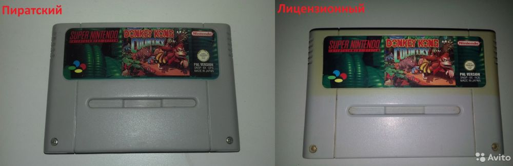
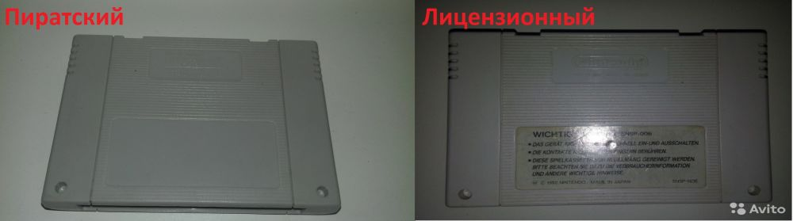
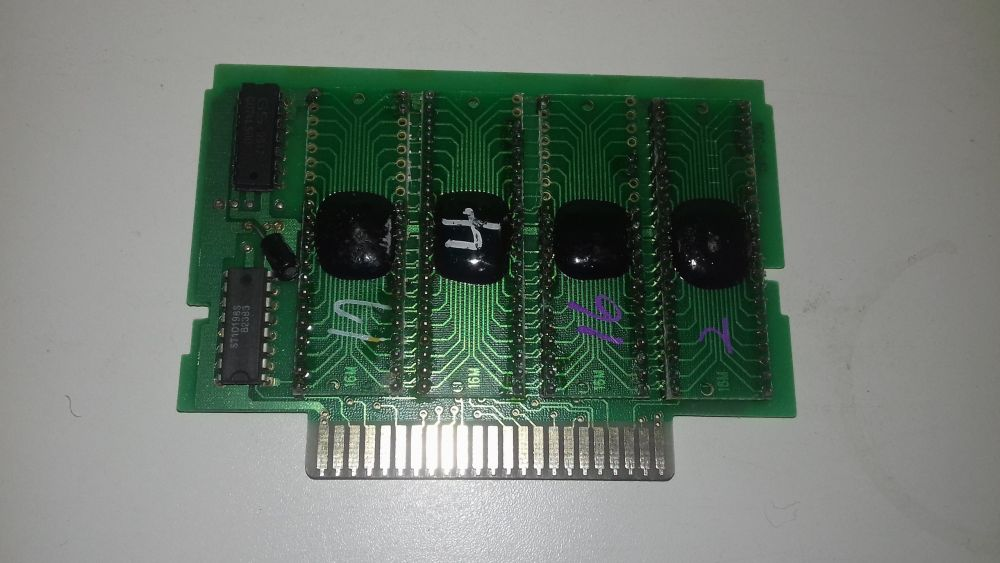
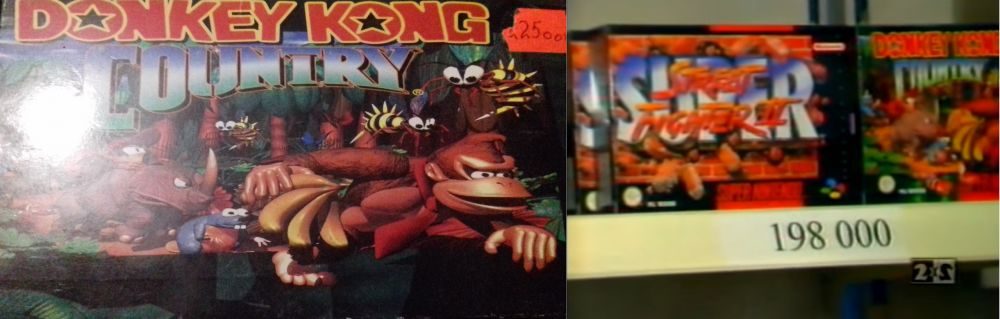

Осмотр пиратского картриджа Donkey Kong Country "PAL Version" для Super Nintendo
Дата написания статьи: 13 апреля 2018.Ссылка на пост ВК (оригинал): https://vk.com/wall-87396586_2253
Адаптировано для музея: AlexSRMD
Вновь вас приветствует второй админ нашего уютного паблика. Это кстати 900 пост и он будет особенный.
Сегодняшняя статья, которую я для вас собираюсь написать будет не про 8 бит, а на сей раз уже на 16. Хочу с вами поговорить про один интересный картридж на Super Nintendo - Donkey Kong Country типа PAL Version.
Интерес вызвал чуть ли ни с самого первого момента, в принципе было достаточно одного небольшого взгляда на сам картридж, чтобы понять что перед нами пиратский продукт, хотя прямо скажем не очевидно.
Итак, чем же этот образец себя выдает?
Смотрим картинку 1, где я положил рядом пиратский образец и лицензионный - взял с чьего-то объявления на Авито, но тем не менее не суть...
На первый взгляд, вообщем-то очень пиратка сильно похожа на лицензионный образец, однако давайте же более детально разберем:
1) Винтики обычные крестовые, против стандартных Нинтендовских. Первый и пожалуй самый явный признак
2) Логотип Нинтендо смазался и поэтому упал в качестве, неявно, но все таки намекает.
3) Присмотревшись на пиратский можно заметить что на картинке стала почему то более высокая четкость и из-за этого она немного хуже качеством.
4) Если присмотреться, то видно, что название на пиратском, немного уехало вверх, буквально на пару миллиметров, это заметно еще и потому что внизу приглядевшись можно увидеть небольшую полоску зеленого цвета, которая намекает что картинка уехала при копировании немного вверх.
С передней частью вроде бы разобрались, но дальше гораздо интереснее, переворачивая картридж и рассматривая сзади можно увидеть что:
Смотрим картинку 2
5) Слева - то есть нелицензионный говорит нам внезапно о том, что картридж для Супер Фамикома сделан ( на фото может быть не очень видно, зато в прикрепленном видео заметно, да и на сайте скан есть ), хотя вроде бы нам говорилось что это PAL = Европейская версия, но в Европе не было Super Famicom`а
6) Вместо предупреждающих надписей у нас просто пустота, хотя мы видим что на лицензии они есть.
С прорезями все в полном порядке, они такие же как на лицензии, на них стоит обращать внимание во вторую очередь, после винтов спереди.
Смотрим картинку 3
Последнее нам говорит что картридж пиратского происхождения - внутренняя плата. Это типичная пиратская плата, которая собрана на безкорпусных кристаллах - это те же микросхемы, только разводка делается на через ножки корпуса, а напрямую с чипа, в данном случае мы видим именно это, четыре безкорпусных "капли", которые располагаются совершенно иначе, нежели на лицензии. Однако же есть тут даже и две микросхемы, небольше, за что они отвечают сказать трудно. Если кто знает - добро пожаловать в комментарии, друзья.
Но пожалуй самой главной неожиданностью, еще даже до вскрытия оказалось то, что я принеся этого Конга домой, уже зная что это не лицензия тем не менее включил в приставку и решил поиграть немного и вот тут то и началось...
При попытке сохранить игру, вместо того чтобы высветить сохраненную игру в слоте, выводилась пустота. Сначала я просто перезапустил приставку - ничего не поменялось, потом у меня возникла мысль что возможно в картридже села батарейка и надо бы ее заменить. И вот тут, как говорится, нашла коса на камень. Посмотрите на плату - там попросту оказалось что нет никакой батарейки, ее в принципе нет, что и отличает этот образец от многих других аналогичных, о которых мы еще будем говорить. Под батарейку даже места не предусмотрено на плате, то есть никто даже и не думал что батарейка там будет.
Зачем так было сделано? Уменьшить затраты на производство? Незнание тех кто копировал зачем нужна батарейка в картридже? И то и другое возможно, но так или иначе это вышло сильным боком даже самим пиратам, во многом это было не нужно - убирать батарейку, потому как это очень не сильно сократит ваши затраты, батарейки не очень дорого стоили даже в 90ые годы.
Если говорить о незнании назначения батарейки, то это тоже вышло боком, теперь вся игра проходится исключительно на одном включении приставки в сеть. Донки Конг Кантри не очень длинная игра, но поверьте иногда сохранения там очень нужны, а боком вышло потому что они себя некисло так поставили, ибо доверие к таким образцам могло сильно упасть после их покупки, которая я уверен была недешевая, несмотря на все проделанные ухищрения, ибо пиратские картриджи для СНЕС стоили очень незначительно дешевле, а иногда даже и дороже. Я полагаю это зависело от наглости поставщика, самих пиратов и экономической ситуации в целом. Грубый, но пример.
Смотрим картинку 4
Например тот же Кантри в магазине "Денди" стоил 191 000 ( В Денди Новая Реальность проскакивало), а пиратский образец стоил в то же время 225 000 ( это кстати тоже мой, про него еще обязательно будет ).
Для сравнения - Денди Классик стоила 120 000, а Джуниор 99 000.
В конце, я хочу еще приложить геймплей с этого картриджа, и как оказалось внутри и впрямь европейская версия игры. И видео с неработающими сэйвами я тоже записал.
Видео #1 (Геймплей игры): https://www.youtube.com/watch?v=hssQ4xPCJcc
Видео #2 (Демонстрация нерабочих сохранений): https://www.youtube.com/watch?v=83tHopwmvh4
Я надеюсь вам понравилась эта статья. Если да, то не забывайте ставить лайки, комментировать и репостить, а также подписываться на наш паблик и ютуб каналы. Я вам говорю, что такие статьи обязательно еще будут.
Большое спасибо за внимание, ваш второй админ - SuperBrain1997.
Галерея



